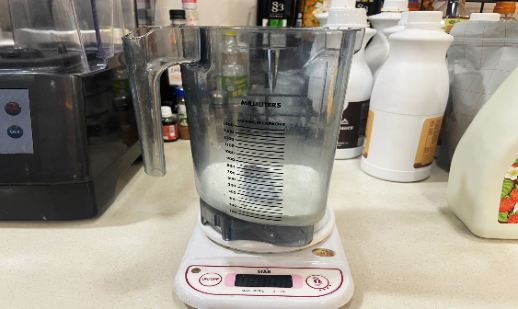
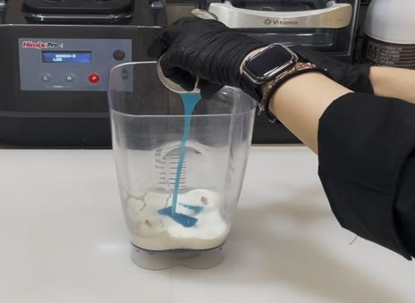
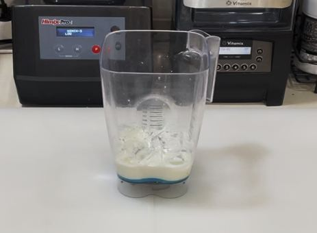
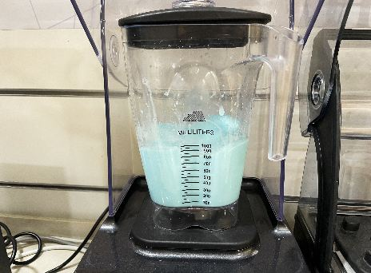
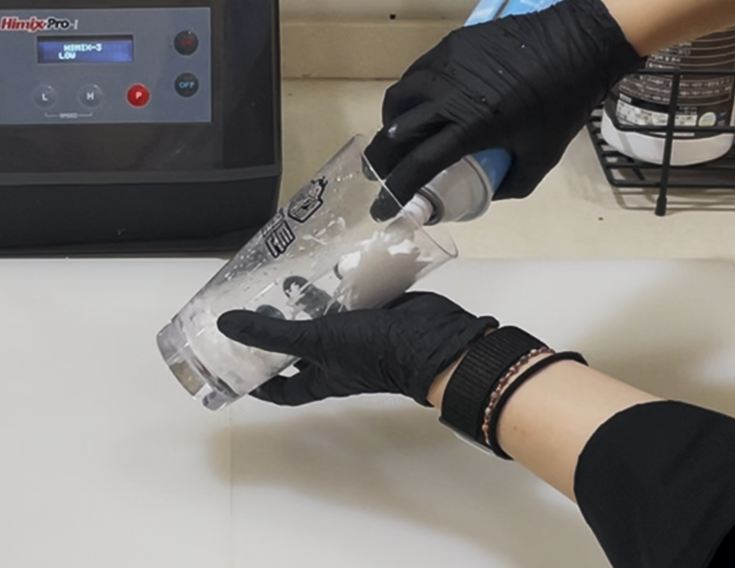
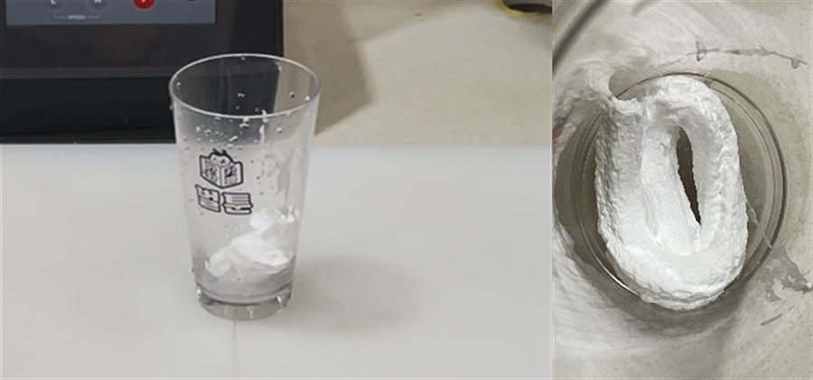
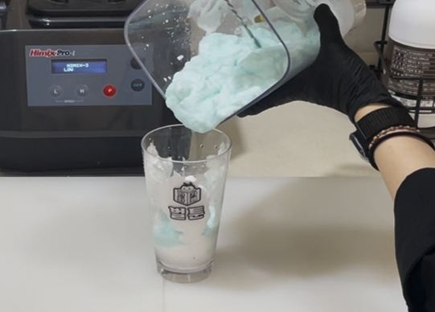
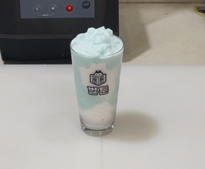
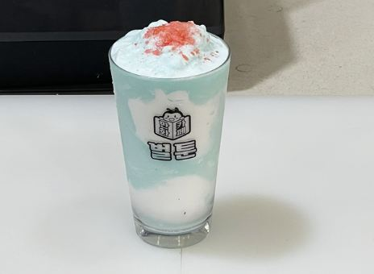

| 메뉴명 | 캔디소다팝 슬러시 |
|---|---|
| 판매가격 | 6,500원 |
| 원재료 | 소다향베이스, 우유, 얼음, 휘핑크림, 팝핑캔디 |
| 사용 부자재 | 16oz 아이스컵, 리드뚜껑, 홀더, 버블티 빨대 |
| 메뉴특징 | 크리미한 소다맛에 톡톡 터지는 팝핑캔디를 더해 달콤하고 청량한 슬러시 음료 |
제조방법

1
블랜더볼에 우유 150g을 넣는다.
블랜더볼에 우유 150g을 넣는다.

2
소다향베이스 90g을 넣는다.
소다향베이스 90g을 넣는다.

3
16온스 컵 가득 얼음을 담아 블랜더 볼에 넣는다.
16온스 컵 가득 얼음을 담아 블랜더 볼에 넣는다.

4
뚜껑을 덮어 #LOW 15초간 갈아준다.
뚜껑을 덮어 #LOW 15초간 갈아준다.

5
16온스 컵 바닥에 휘핑크림 한바퀴반(10g)을 짜고 컵을 바닥에 탕탕 쳐준다.
16온스 컵 바닥에 휘핑크림 한바퀴반(10g)을 짜고 컵을 바닥에 탕탕 쳐준다.

6
컵 벽면 군데군데에 휘핑크림을 짠다.
(※직접 짜기 힘든 경우, 숟가락에 짜서 컵 벽면에 붙이기)
컵 벽면 군데군데에 휘핑크림을 짠다.
(※직접 짜기 힘든 경우, 숟가락에 짜서 컵 벽면에 붙이기)

7
소다슬러시를 컵안에 절반만 넣은 뒤, 바닥에 약한 힘으로 탕탕 쳐서 공기를 빼준다.
(※ 과하게 치지 않기)
소다슬러시를 컵안에 절반만 넣은 뒤, 바닥에 약한 힘으로 탕탕 쳐서 공기를 빼준다.
(※ 과하게 치지 않기)

8
나머지 소다슬러시를 담아준다.
나머지 소다슬러시를 담아준다.

9
슬러시 가운데에 팝핑캔디 4봉(4g)을 뜯어서 올리고 버블티 빨대와 함께 제공한다.
슬러시 가운데에 팝핑캔디 4봉(4g)을 뜯어서 올리고 버블티 빨대와 함께 제공한다.